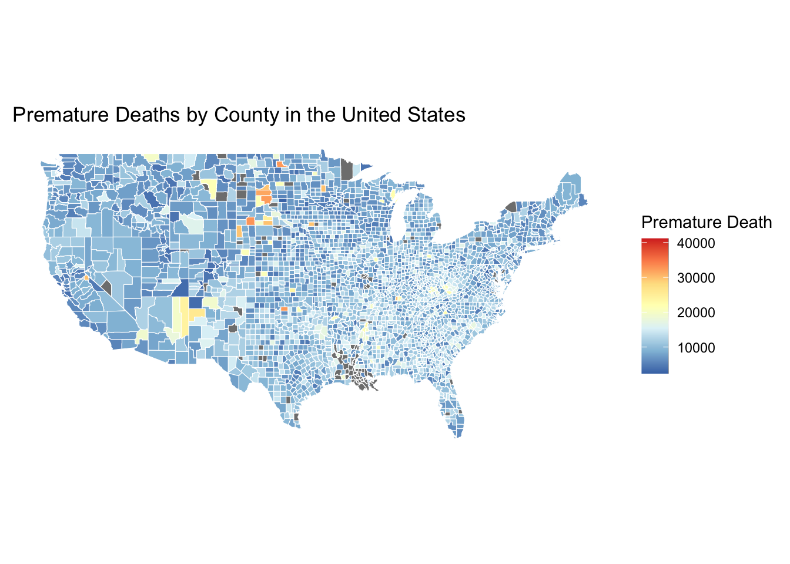
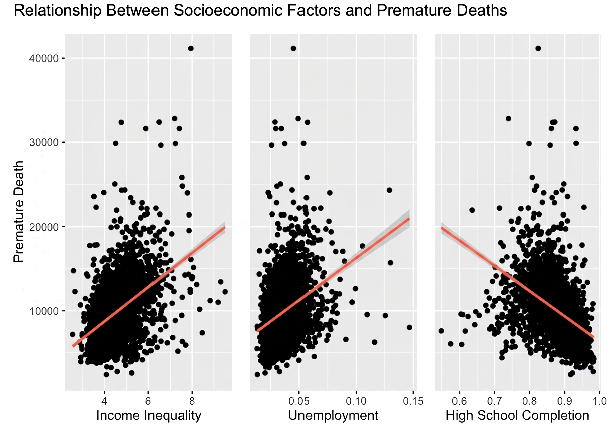

Examining the Influence of Socioeconomic Factors on Premature Death Rates Across Racial Groups
Examining the Influence of Socioeconomic Factors on Premature Death Rates Across Racial Groups
A statistical investigation into county-level predictors of health disparities, utilizing Gradient Boosted Trees and Linear Regression to identify key social determinants of health.
Research Question
How do social determinants of health shape premature death rates across racial groups in the United States?

Methodology
The study utilized data from the County Health Rankings data set. Statistical modelings methods were implemented using R evaluate relationships between mortality and various Social Determinants of Health (SDOH). Based on exploratory data analysis, two distinct modeling approaches were chosen to be compared:
-
Observe direct linear relationships between SDOH variables and the outcome.
- Gradient Boosted Trees: Capture non-linear relationships between variables.

Key Findings
Socioeconomic Impact
Higher income inequality and unemployment were linked to more years of premature death (earlier deaths). Higher high school completion rates are linked to fewer years of premature deaths.
Variable Importance
Multiple linear regression identified AIAN population percentage as the most important variable, likely due to the model's sensitivity to this group's small population percentages across the U.S.
Model Performance
Cross-validation showed the gradient boosted tree captured relationships in the data that multiple linear regression did not.

This research was conducted as part of the Carnegie Mellon Summer Undergraduate Research Experience (SURE) program in partnership with UnitedHealth Group.